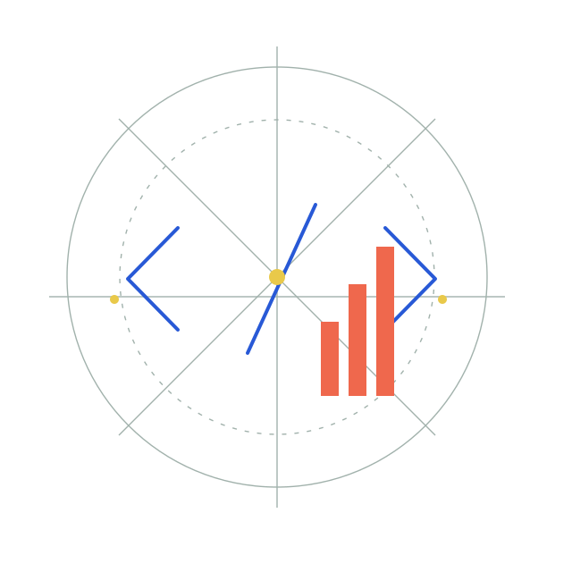

WRITING DESKSELECTED
最近写下的
ON THE DESKNOW
此刻在做什么
训练记录
把易错题型、代码路径和时间分配放在同一页，减少重复踩坑。
数据观察
从公开名单和比赛结果里寻找变化，保留可回查的来源与口径。
持续写作
先写清楚发生了什么，再讨论它意味着什么。

WRITING DESKSELECTED
ON THE DESKNOW
把易错题型、代码路径和时间分配放在同一页，减少重复踩坑。
从公开名单和比赛结果里寻找变化，保留可回查的来源与口径。
先写清楚发生了什么，再讨论它意味着什么。